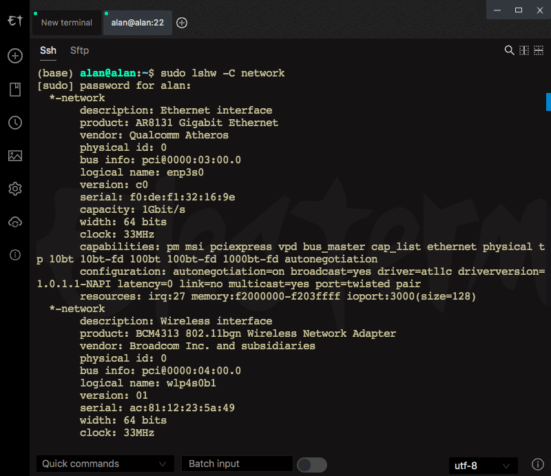

做个局域网服务器
安装ubuntu 18 server
玩树莓派4b玩了几天发现没什么可玩的，大年二十九那天突然想起来家里面还有一个很老的联想笔记本电脑一直没人用，基本上就是废了的，cpu是奔腾p6200的吧，2g的ram，连win7都运行不了的，型号是B460。然后大年三十就下午把电脑拿出来，发现基本上是打不开win7系统了，但是不清楚还有什么文件在里面，然后就用之前做的pe系统看看还有什么重要内容，移出来点东西，之后又把电脑拆开，清理了风扇的灰尘（其实没什么用，应该是机器太老了，10多年前的，清理后还是随随便便就有风扇声，而且还很大，不过作为服务器就不管了），在考虑要不要加点内存或者换cpu，但是感觉不值当。
Create a bootable USB stick on Windows
基本上就是参考官方的指南：https://ubuntu.com/tutorials/create-a-usb-stick-on-windows#1-overview ，我也用rufus制作的usb。下载的是Ubuntu 18 Server LTS，后面确认后有additional download，这个选择确认，再后面有提醒说Ubuntu ISO是ISOHybrid image，此时确认Write in ISO Image mode，之后等待就可以了。
Installation and miscellaneous
开机f12进入bios，选中u盘就可以一步到底直接安装。最麻烦的是安装之后的网络问题，Wi-Fi和ethernet全部报废，我折腾了好几个小时。
此时正确的做法应该是先修好ethernet再修Wi-Fi，我当时是搞反了，浪费了大量时间。
Fix Wi-Fi:
Wi-Fi：因为没有有线网，就只能本地安装一些package，但是dependency还要一直安装下去，所以就特别特别麻烦。主要需要安装两个包，一个是wireless-tools，一个是wpasupplicant，都是挺重要的包，很好奇是不是就是server版本的没有。
从usb安装package:
1 | lsblk |
然后用iwconfig来查看可用的Wi-Fi设备
1 | sudo ifconfig wlp4s0b1 up |
这样Wi-Fi就好了。
合盖不休眠
1 | sudo nano /etc/systemd/logind.conf |
1 | sudo restart systemd-logind |
Fix Ethernet
1 | sudo lshw -C network #查看网络硬件，发现ethernet被disable |

常用命令
1 | sudo apt update # Fetches the list of available updates |
安装docker
1 | sudo apt-get remove docker docker-engine docker.io containerd runc # Uninstall old versions |
Run Deemix Docker:
1 | sudo docker run -d --name Deemix \ |
Have fun at: http://alan:6595 (alan是server的名字，在同一局域网内，直接用alan这个设备名来代替局域网内的IP地址，算是local dns(?))
安装nextcloud
1 | sudo snap install nextcloud # install nextcloud using snap |
Log in http://alan:81, and have fun.
安装samba
1 | sudo apt update |
now configure samba: sudo nano /etc/samba/smb.conf
1 | [sambashare] |
Press Ctrl-O to save and Ctrl-X to exit from the nano text editor.
then
1 | sudo service smbd restart |
Use nplayer or MXplayer on iOS/Android to access samba sharing files.
安装miniconda和jupyter notebook
参考：https://conda.io/projects/conda/en/latest/user-guide/install/linux.html
1 | wget https://repo.anaconda.com/miniconda/Miniconda3-latest-Linux-x86_64.sh |
1 | conda create --name py38 python=3.8 # install python 3.8, ubuntu 18 server LTS自带的python是2.7和3.7 |
To make jupyter notebook running in the background, usetmux, and activate py38, use jupyter noteboook, press Ctrl+B and D (mean: detach) to detach from tmux screen, to reenter tmux, use tmux attach, to terminate jupyter, use Ctrl+C, to terminate tmux, use exit.
Install jupyterthemes:
1 | conda install -c conda-forge jupyterthemes |
安装酸酸乳
socks5 proxy:
1 | cd /tmp |
1 | sudo ssr help |
transfer socks5 to http:
1 | sudo apt-get install privoxy |
add:
1 | listen-address 127.0.0.1:8118 |
1 | sudo service privoxy start |
Set Global Proxy:
1 | export http_proxy='http://localhost:8118' |
Unset Global Proxy:
1 | unset http_proxy |
Test Proxy:
1 | curl www.google.com |
For Git:
1 | git config --global http.proxy 'socks5://127.0.0.1:1080' |
1 | git config --global --unset http.proxy |
参考:
所有的都是Google和stack exchange等网站上找的。
https://www.bilibili.com/video/av20036348/
https://ubuntu.com/tutorials/create-a-usb-stick-on-windows#1-overview
https://ubuntu.com/tutorials/install-and-configure-samba#1-overview
https://unix.stackexchange.com/questions/48179/sharing-multiple-folders-with-samba
https://conda.io/projects/conda/en/latest/user-guide/install/linux.html